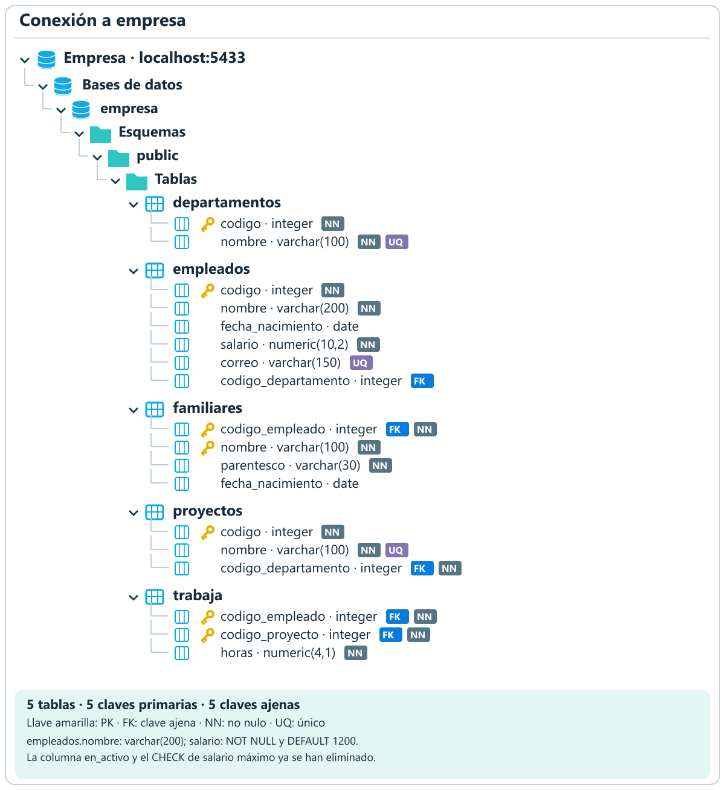
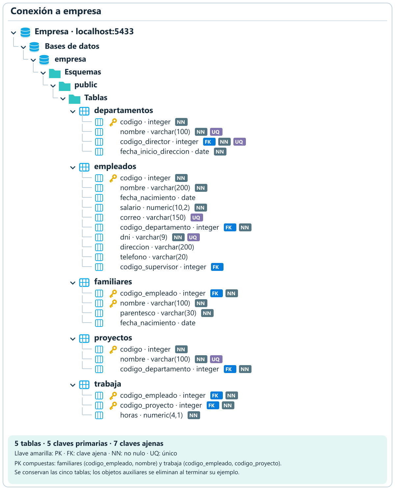
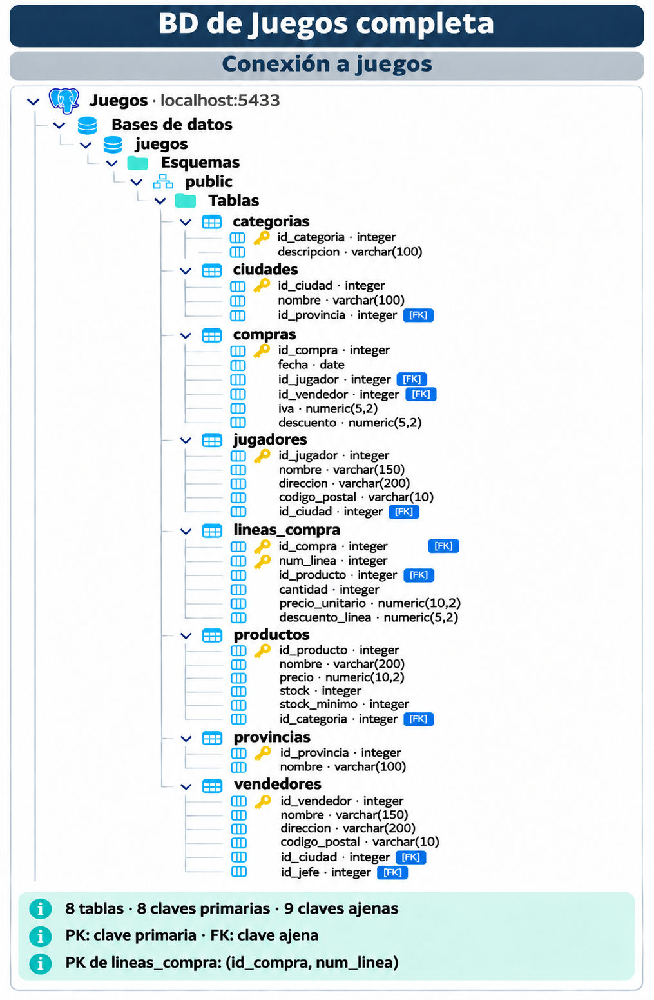

ALTER TABLE
ALTER TABLE modifica la estructura de una tabla existente: permite añadir, eliminar o modificar columnas y restricciones.
Sintaxis básica
Acciones sobre columnasALTER TABLE [esquema.]tabla { ADD COLUMN columna tipo [(tamaño)] [ DEFAULT valor ] [ restricciones_de_columna ] | ALTER COLUMN columna TYPE tipo [(tamaño)] | ALTER COLUMN columna { SET DEFAULT valor | DROP DEFAULT } | ALTER COLUMN columna { SET NOT NULL | DROP NOT NULL } | RENAME COLUMN columna TO nuevo_nombre | DROP COLUMN columna }; |
Acciones sobre restricciones de tablaALTER TABLE [esquema.]tabla { ADD [ CONSTRAINT nombre_restriccion ] restriccion_de_tabla | DROP CONSTRAINT nombre_restriccion }; |
Cambiar el nombre de la tablaALTER TABLE [esquema.]tabla RENAME TO nuevo_nombre_tabla; |
Acciones sobre columnas
ADD COLUMN: añade una columna con su tipo y, opcionalmente, un valor por defecto y restricciones de columna.ALTER COLUMN ... TYPE: cambia el tipo de dato o su tamaño.SET DEFAULT / DROP DEFAULT: establece o elimina el valor por defecto de la columna.SET NOT NULL / DROP NOT NULL: exige un valor en la columna o permite que admita nulos.RENAME COLUMN ... TO: cambia el nombre de una columna.DROP COLUMN: elimina una columna.
Acciones sobre restricciones de tabla
ADD [CONSTRAINT nombre_restriccion]: añade una restricción de tabla, como PRIMARY KEY, UNIQUE, FOREIGN KEY o CHECK. El nombre es opcional.DROP CONSTRAINT: elimina una restricción por su nombre.
Acciones sobre la tabla
RENAME TO: cambia el nombre de la tabla.
Elige una alternativa del grupo correspondiente para cada sentencia. Los nombres de columnas y restricciones deben corresponder a los de la tabla.
Antes de añadir una restricción, los datos existentes deben cumplirla. Para cambiar la definición de un CHECK o una clave ajena, se elimina la restricción y se crea de nuevo.
Pruébalo: Modificar una tabla
Desde empresa, ejecuta las sentencias una a una y observa los cambios en empleados.
ALTER TABLE empleados ADD COLUMN activo BOOLEAN DEFAULT TRUE;
ALTER TABLE empleados ALTER COLUMN nombre TYPE VARCHAR(200);
ALTER TABLE empleados ALTER COLUMN salario SET DEFAULT 1200;
ALTER TABLE empleados ALTER COLUMN salario SET NOT NULL; -- Restricción de columna: NOT NULL
ALTER TABLE empleados ADD CONSTRAINT ck_empleados_salario_maximo CHECK (salario <= 10000); -- Restricción de tabla: CHECK
ALTER TABLE empleados RENAME COLUMN activo TO en_activo;
ALTER TABLE empleados DROP COLUMN en_activo;
ALTER TABLE empleados DROP CONSTRAINT ck_empleados_salario_maximo; -- Elimina la restricción de tabla CHECK
Las mismas operaciones agrupadas
Puedes reunir varias acciones sobre la misma tabla en una sola sentencia ALTER TABLE, separándolas por comas. El punto y coma se escribe al terminar la sentencia.
Esta versión es una alternativa al ejemplo anterior y deja la tabla en el mismo estado final. Si ya ejecutaste las sentencias individuales, no vuelvas a ejecutar estos bloques sobre la misma tabla.
ALTER TABLE empleados
ADD COLUMN activo BOOLEAN DEFAULT TRUE,
ALTER COLUMN nombre TYPE VARCHAR(200),
ALTER COLUMN salario SET DEFAULT 1200,
ALTER COLUMN salario SET NOT NULL, -- Restricción de columna: NOT NULL
ADD CONSTRAINT ck_empleados_salario_maximo
CHECK (salario <= 10000); -- Restricción de tabla: CHECK
RENAME se ejecuta en una sentencia independiente, tanto para cambiar el nombre de una columna como el de una tabla:
ALTER TABLE empleados RENAME COLUMN activo TO en_activo;
Las dos eliminaciones también pueden agruparse:
ALTER TABLE empleados
DROP COLUMN en_activo,
DROP CONSTRAINT ck_empleados_salario_maximo; -- Elimina la restricción de tabla CHECK
Actualiza la conexión Empresa y despliega las tablas. Esta imagen orientativa muestra el estado al terminar el ejemplo:

Completar las relaciones de Empresa
Ya tenemos las cinco tablas. Ahora incorporaremos los datos personales que faltan, exigiremos que cada empleado pertenezca a un departamento y añadiremos el supervisor y el director de departamento, como en el modelo relacional. Ejecuta este bloque después del ejemplo anterior, mientras las tablas siguen vacías.
Pruébalo: Completar Empresa con ALTER TABLE
Desde empresa, ejecuta en este orden:
ALTER TABLE empleados ADD COLUMN dni VARCHAR(9) NOT NULL UNIQUE; -- Restricciones de columna: NOT NULL y UNIQUE
ALTER TABLE empleados ADD COLUMN direccion VARCHAR(200);
ALTER TABLE empleados ADD COLUMN telefono VARCHAR(20);
ALTER TABLE empleados ALTER COLUMN codigo_departamento SET NOT NULL; -- Restricción de columna: NOT NULL
ALTER TABLE empleados ADD COLUMN codigo_supervisor INTEGER;
ALTER TABLE empleados ADD CONSTRAINT fk_empleados_supervisor -- Restricción de tabla: FOREIGN KEY reflexiva
FOREIGN KEY (codigo_supervisor) REFERENCES empleados(codigo);
ALTER TABLE departamentos ADD COLUMN codigo_director INTEGER NOT NULL UNIQUE; -- Restricciones de columna: NOT NULL y UNIQUE
ALTER TABLE departamentos ADD COLUMN fecha_inicio_direccion DATE NOT NULL; -- Restricción de columna: NOT NULL
ALTER TABLE departamentos ADD CONSTRAINT fk_departamentos_director -- Restricción de tabla: FOREIGN KEY
FOREIGN KEY (codigo_director) REFERENCES empleados(codigo);
El supervisor puede ser nulo. El director es obligatorio y único: cada departamento tiene un director y un empleado dirige como máximo un departamento. La fecha indica cuándo empezó a dirigirlo.
Departamentos y empleados se referencian mutuamente. Por eso hemos creado primero las tablas y añadido la FK del director al final. Al insertar datos en DML habrá que tener en cuenta esta dependencia: crear el departamento con su director y el empleado con su departamento requiere planificar la carga; no basta con elegir una tabla primero. Por ahora conserva la estructura vacía.
Actualiza la conexión Empresa y despliega las tablas. Esta imagen orientativa muestra el estado al terminar el ejemplo:

Ejercicios: Completar la estructura
Continúa con las ocho tablas ya creadas. Ahora modificarás su estructura con ALTER TABLE, sin borrar las tablas ni repetir los CREATE.
Ejercicio 9: Añadir alias
Juegos
Añade a vendedores una columna alias VARCHAR(40) NOT NULL UNIQUE. La tabla todavía está vacía; explica qué habría que preparar si ya tuviera filas.
Ejercicio 10: Eliminar alias
Juegos
Elimina la columna alias.
Ejercicio 11: Añadir la PK de categorias
Juegos
Desde la conexión Juegos, utiliza ALTER TABLE para añadir a categorias la clave primaria que dejamos pendiente en el ejercicio 1. No vuelvas a crear la tabla.
Modelo relacional que debe quedar
CATEGORIAS (id_categoria, descripcion)
- PK: (id_categoria)
Ejercicio 12: Completar productos y la relación reflexiva
Juegos
Desde la conexión Juegos, completa con ALTER TABLE las claves pendientes de productos y la relación reflexiva de vendedores. Conserva sus columnas y las restricciones que ya tienen.
Modelos relacionales que deben quedar
PRODUCTOS (id_producto, nombre, precio, stock, stock_minimo, id_categoria)
- PK: (id_producto)
- FK: id_categoria → CATEGORIAS(id_categoria)
VENDEDORES (id_vendedor, nombre, direccion, codigo_postal, id_ciudad, id_jefe)
- PK: (id_vendedor)
- FK: id_ciudad → CIUDADES(id_ciudad)
- FK: id_jefe → VENDEDORES(id_vendedor)
Añade la PK de productos y su FK hacia categorias. En vendedores, añade únicamente la FK de id_jefe hacia id_vendedor; la PK y la FK de id_ciudad ya existen. id_jefe debe admitir nulos para los vendedores sin jefe.
Ejercicio 13: Añadir las FK de lineas_compra
Juegos
Desde la conexión Juegos, utiliza ALTER TABLE para completar las dos claves ajenas de lineas_compra, pendientes desde el ejercicio 8. Conserva la PK compuesta y la obligatoriedad de id_producto.
Modelo relacional que debe quedar
LINEAS_COMPRA (id_compra, num_linea, id_producto, cantidad, precio_unitario, descuento_linea)
- PK: (id_compra, num_linea)
- FK: id_compra → COMPRAS(id_compra)
- FK: id_producto → PRODUCTOS(id_producto) [no nulo]
Define la FK hacia compras con ON DELETE CASCADE, para que al borrar una compra se borren sus líneas. La FK hacia productos debe usar ON DELETE NO ACTION. Al terminar, comprueba que Juegos tiene ocho PK y nueve FK.
Antes de continuar: Comprueba que hay ocho PK y nueve FK. La columna temporal alias debe haber desaparecido. Conserva todas las tablas vacías para la carga de DML. Los ejercicios de índices y vistas se realizarán después, en DQL.
Al finalizar el ejercicio 13, actualiza la conexión Juegos y despliega las tablas y sus columnas. Esta imagen orientativa muestra la estructura completa, con las claves primarias y ajenas ya incorporadas. La PK de lineas_compra está formada por id_compra y num_linea:
